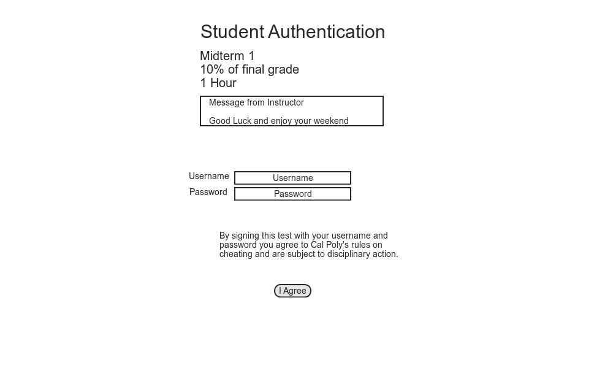
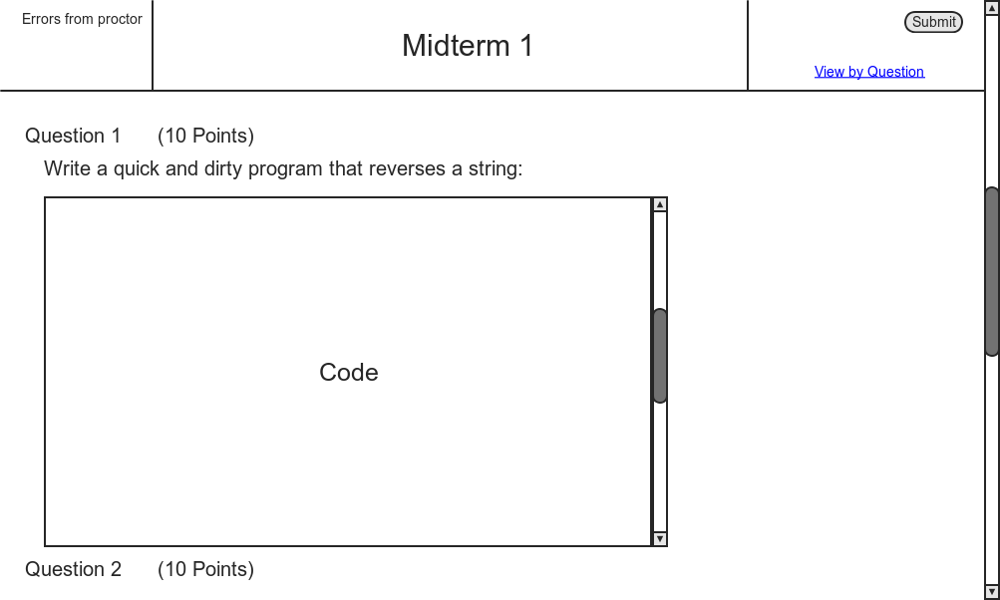
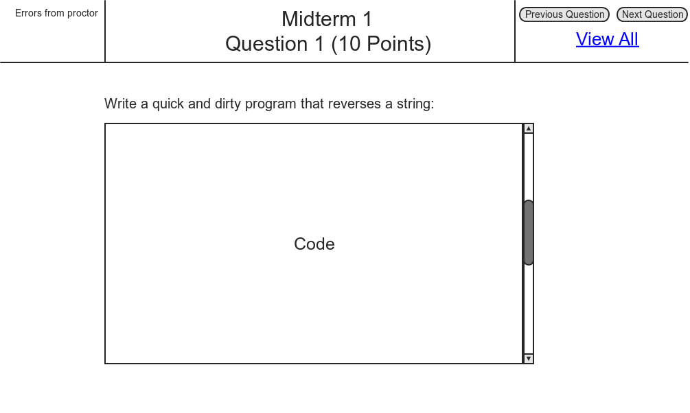

Below is the student authentication page, which is initiated by the proctor

Figure 2.4.2.1: Student Test Home
The student must enter their username and password to begin taking the test.
Figure 2.4.2.2: Intital Test Page
The student is given a default view of the whole test on one scrollable page.Errors from the proctor station are listed on the upper left corner of the screen
Submit signifies completion of the test and is the equivelant to turning your exam into the instructor.
They have the option of going to a question per page view by clicking the view by question link.

Figure 2.4.2.3: Question View
In "view by question" mode, there is only one question per page.Errors from proctor now only displays errors relevant to this question.
Previous and next question buttons display the respective question. If it is the first or last question, then it will go to the view all mode to allow for quick error checking and submission.